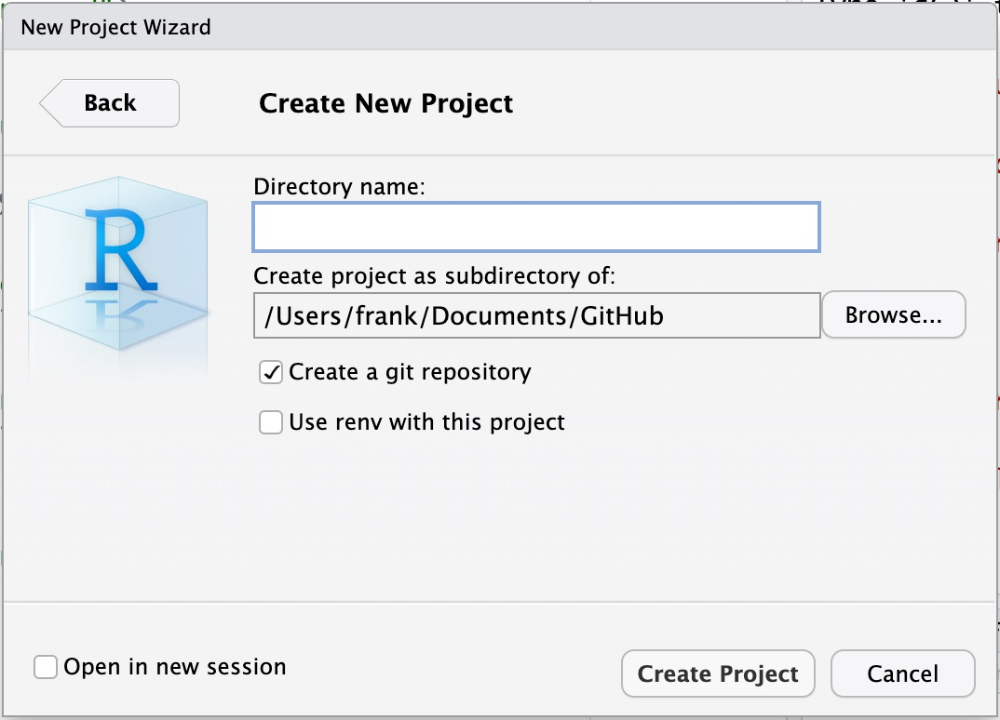
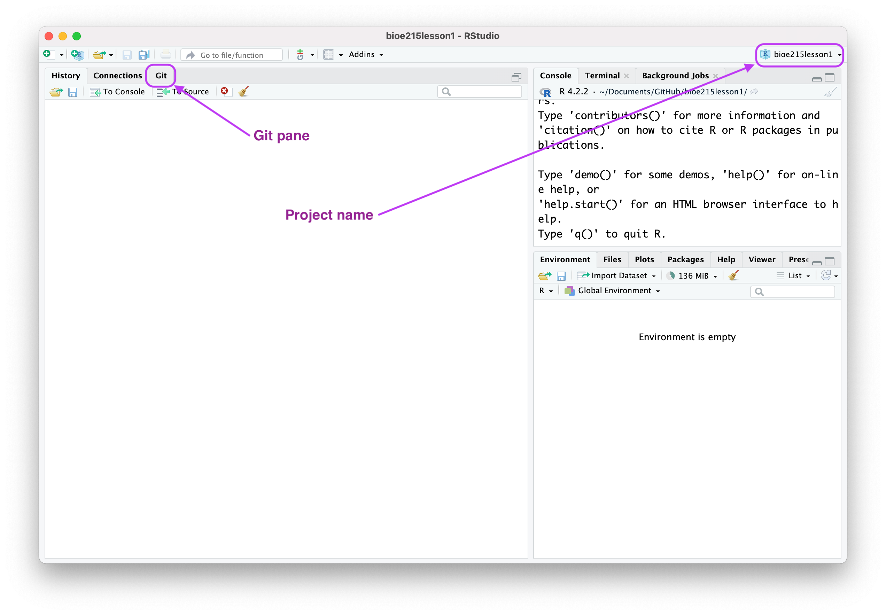
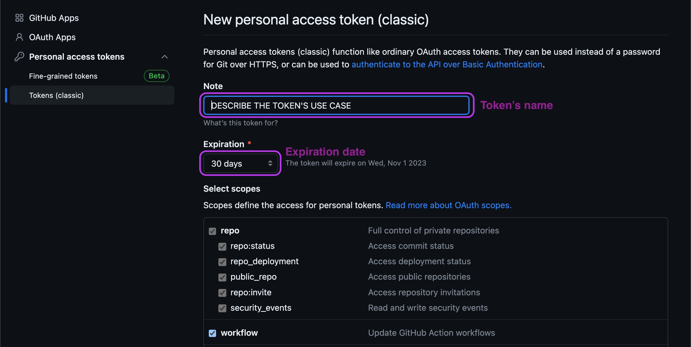

Computational project organization
Student learning objectives
Students will be able to:
Describe the relationship between RStudio project, git repo, and GitHub repo
Organize files and folders to maximize reproducibility and collaboration
Create a project website on GitHub
Today’s lesson
tl;dr Each of your analyses should have a standalone directory with all the code and data necessary to produce your results.
This lesson has readings, an exercise, and an assessment. Feel free to jump around and do them in whatever order works best for you. I suggest the following order:
- Read Bryan (2017) about project-oriented workflows
- Complete the first three parts of the Exercise
- Read Bryan (2018) about version control with git and GitHub
- Complete the final fourth part of the Exercise
- Complete the Assessment
But first, watch this Tik Tok
Readings
The readings will help clarify why the skills you’re learning will improve your productivity and make your science easier to share, reproduce, and collaborate on.
Exercise
In this exercise you’re going to set up an analysis to take advantage of project organization tools in RStudio, git, and GitHub. We’ll use this framework for exercises and assessments throughout the rest of the course.
Goals
- Create an RStudio project and git repository on your computer
- Create a corresponding GitHub repository online
- Set up an analysis-friendly folder structure
- Activate GitHub pages to give your project a website
Step 1: Create an RStudio project and git repository
Open RStudio. From the top menu, click on File > New Project to launch the New Project Wizard.
Choose New Directory > New Project. You should now see the Create New Project prompt.

The Directory name is the name of your project. Call it “bioe215lesson1”. When it comes to project directory naming, there are a couple of best practices to follow. Stick to letters and numbers, and avoid special characters like spaces, underscores, and dashes. This ensures your directory name will be compatible with the naming requirements for R, git, and GitHub.
Next you’ll choose where to put your project on your computer. In the screenshot above, Create project as subdirectory of: is set to /Users/frank/Documents/GitHub, which is where I keep projects on my computer. Yours may default to somewhere unhelpful. I suggest creating a subfolder in your “Documents” directory called “GitHub”, then use the “Browse…” button to navigate there.
Make sure the check box for Create a git repository is checked.
Click on Create Project.

Once RStudio finishes creating your project, you should see something like the screenshot above. Make sure you see both the git pane and the project name. Let the instructor know when you’re done with this step so they can check everything looks right.
Step 2: Create a GitHub repository
RStudio projects and git repos both live locally on your computer. GitHub repos are remote repositories on the internet. Now you’re going to create a remote GitHub repository.
First, install the usethis package, which has helpful functions for project organization and management. At the R console, run install.packages("usethis").
If you don’t have a GitHub account yet, now’s the time to create one. Go to github.com and create an account.
Make sure git is configured on your machine to have the correct user name and email. In the Terminal pane (not the Console pane)1, run git config --list. Your user.name should be your name and user.email should be the same email you used with your GitHub account. If they’re not configured correctly, run the following R command in the Console. Change YOURNAME and YOUREMAIL accordingly. This is a one-time setup command, you won’t have to do it again until you replace your computer.
usethis::use_git_config(user.name = "YOURNAME", user.email = "YOUREMAIL")[Is the double colon :: unfamiliar? This operator tells R to look for a function in a certain package. So this command uses the use_git_config() function from the usethis package. Alternatively, you can call library(usethis) and then call the function directly.]
The last step before you can connect RStudio to GitHub is saving your credentials. The safest way to do that is with Personal Access Tokens, or PATs. These tell GitHub you are who you say you are and prevent anyone else from messing with your remote repositories2. If you know you already have a PAT, continue to the next step. This is easy to do with usethis. Call usethis::create_github_token(), which will launch GitHub in your web browser. Give your token the name “RSTUDIO” and change the Expiration from 30 days to 90 days. Scroll all the way to the bottom and click the green Generate token button.

You should see a long line of text with a green check mark next to it. That’s your token. Copy it, then go back to RStudio. At the Console, run gitcreds::gitcreds_set(). You’ll get a prompt to ? Enter new password or token:. Paste your token and click enter. Now RStudio and GitHub can talk to each other3.
All that’s left to do now is creating your GitHub repo. usethis helps automate this step. First, call usethis::use_git() and commit the uncommitted files. Then call usethis::git_default_branch_rename()4. Finally, call usethis::use_github(). You should now see your GitHub repository in your browser. Once again, let the instructor know when you’re done with this step so they can check everything looks right.
Step 3: Set up folder structure
Step 4: Activate GitHub pages
Assessment
Reading questions
Answer the following questions about the reading. After you finish step 3 of the exercise, create a markdown file in your project’s docs/ folder called comp_proj_org.md and place your answers there. Plain text is ok, or you can use Markdown.
Bryan (2017)
What problems can
setwd()cause in your scripts and how do RStudio projects address them?When you call
rm(list=ls()), what is removed from your environment? What’s left over that restarting your R session would remove? What’s the keyboard shortcut for restarting your R session?
Bryan (2018)
- The basic git commands are commit, push, and pull. Which one
Additional reading
References
Footnotes
If you can’t find the Terminal pane, ask your instructor for help. Sometimes it needs to be activated the first time you use it.↩︎
The internet is full of vandals. C’est la vie.↩︎
PATs are kind of like your git configuration in that they’re “set it and forget it” commands. You will only need to update your PAT every three months if you set Expiration to 90 days. The rest of the time you don’t need to think about it. And if you’re wondering why we set PATs to expire at all, see the previous footnote about vandals.↩︎
We won’t cover branches in this course, but they’re an important part of version control. Suffice to say, every repo has a main branch which by default is called “master”. That’s racist terminology, so there’s a concerted effort to use “main” instead.↩︎